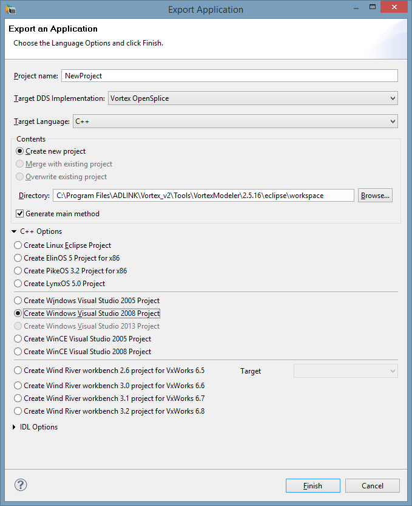

6. Code Generation¶
This section describes how to use the Vortex OpenSplice Modeler for generating DDS-compliant source code. The DDS code generated by the Vortex OpenSplice Modeler removes the need for programmers to manually write the DDS components of their applications; the Modeler does it for them using an easy-to-use, Eclipse-based graphical interface.

The OpenSplice HDE (version 6.1 or above) must be installed and configured in order to generate code for OpenSplice from Vortex OpenSplice Modeler.
Vortex Lite (version 1.2 or above) must be installed and configured in order to generate code targeting Vortex Lite from Vortex OpenSplice Modeler.
The principal purpose of the Vortex OpenSplice Modeler is to generate DDS-compliant source code. The Modeler achieves this aim and is able to generate:
- code for DDS data types, including
- IDL specifications for Vortex OpenSplice DDS Data Types
- Native language interfaces for Vortex OpenSplice Data Types (via the Vortex OpenSplice IDL Pre-Processor)
- Typed interface code
- Native Language code, in Java or C++, for Applications
The Modeler can generate code either at the Module or Application level. If a Module is exported, then this simply exports all Applications within the Module. This will automatically generate the Vortex OpenSplice IDL and typed interfaces for any data types used by that Application when generating code for an Application.
Code generation can be set to target either of the following DDS Implementations:
- Vortex OpenSplice
- Vortex Lite.
6.1. Saving to Eclipse Projects¶
The code generated by the Modeler can be saved to either a Java or C++ Project within the user’s workspace.
 These folders are created in Java-based projects:
These folders are created in Java-based projects:
src - an empty folder where users can place their own source code
generated - contains the generated DDS type and application code
idl - contains generated IDL specification files
 These folders are created in C++-based projects:
These folders are created in C++-based projects:
src - an empty folder where users can place their own source code
generated - contains the generated DDS type and application code
idl - contains generated IDL specification files

Additionally for Windows, the code generated by the Modeler can be saved to a Visual Studio Project [1] .
The folders created are exactly the same as described above. However, additional Visual Studio-specific files are created that allow the project to be imported into Visual Studio. These files are:
For Visual Studio 2005 and 2008:
<project_name>.vcprojOBJS.makMakefileMakefile.releaseFor Visual Studio 2013:
<project_name>.vcxproj<project_name>.vcxproj.filters
6.2. Exporting Applications¶
An application can be exported by:
Step 1
Right-clicking on the Application in the Project Explorer OR the Diagram Editor.
Step 2
Choosing Generate Application Code.
All of the Applications within a module can be exported by:
Step 1
Right-clicking on the Module containing the Applications to be exported.
Step 2
Choosing Export Module. The Export Application dialog will be displayed (whether one or more applications are selected for code exportation).
Export Application dialog
{kind=link}
Step 3
The Project Name text box contains the name of the export project. Accept the default name or enter a new project name.
Step 4
Select the desired DDS target platform from the Target DDS Implementation drop-down menu.
Step 5
Select the desired target language from the Target Language drop-down menu.
Step 6
In the Contents panel, choose to create a new project, to merge with an exisiting project, or to overwrite an existing project.
Step 7
When creating a project with a new name you can save the project in a location of your choice. Do this by using the Browse button or by directly changing the fields in the Directory text box.
Step 8
Check the Generate main method check box to generate a class containing a main method for the chosen language.
Step 9
The Language Options expandable gives additional options for the project creation.
Step 10
The IDL Options expandable enables you to export additional IDL Types that have not been associated with any entities in the model. To do this you must:
- Expand IDL Options
- Click the Add button
- Choose the IDL Types to be exported (supported Types are Struct, Constant, and Enum) in the Selection dialog
- Click the OK button.
Step 11
Click the Finish button to accept the options and export the Application.
6.3. Java Code Generation¶

The conditions and details relating to the generation of the Java source code for each model component is described in this section.
All generated entities (except Partitions, Topics, ContentFilteredTopics and code generated by the Vortex OpenSplice IDL Pre-Processor) exist in a single Java class file. This class file has the same name as the Application that it represents, and it contains static wrapper classes for all of the DDS entities contained by that Application in the model.
The class hierarchy within an Application class file closely follows the hierarchy which appears in the model.
The following conditions apply for all generated entities:
- All underlying DDS Entities (DomainParticipants, Publishers, Subscribers, DataReaders, DataWriters, Partitions, Topics) in an application can be obtained by using accessor methods on the relevant generated wrapper.
- When the code for an Application component is generated, all DDS entities that are associated to or contained within it are created and configured, including DomainParticipants, Publishers, Subscribers, DataReaders, DataWriters and associated Topics.
- Each generated entity is set to the QoS policy values of its associated QoSSet (from the model).
- Default QoSSet policy values are also set on the relevant Entities.
- A specific entity’s QoS policy values are set when the entity is started (when the start() method is invoked on the Application class).
6.3.1. Applications¶
An Application component contains the configured DDS entities that you wish to use in your own application code.
Code can only be generated for modeled DDS entities such as DomainParticipants, Publishers, Subscribers, Listeners, DataReaders, DataWriters, Partitions, Waitsets and Conditions if they are contained or connected to entities within the Application component.
Each Application is generated into its own Eclipse Java project, with both project name and Java class name reflecting the fully scoped name of the Application in the model.
Example 1
For example, an Application called MyApplication located in the com/prismtech module would result in a Java project called MyApplication. Within that project, located in the generated folder, there would be a source file called MyApplication.java under the com.prismtech package.
There are a number of generated artefacts in the Application class, itself:
static classes for all Listeners, Waitsets and Conditions associated with the Application and its contained Entities
static classes for all DomainParticipants contained by that Application (these classes, in turn, contain static classes for the entities that they contain - this is explained in subsequent sections)
a static WrapperException Wrapper class for error handling at runtime
a start() method for creating and initializing all Entities contained by the Application
Although Topics and ContentFilteredTopics are not directly contained within an Application, any DataReaders or DataWriters that use them will create them.
a stop() method for deleting all Entities contained by the Application
- Listeners are explained under Listeners.
- Waitsets and Conditions are explained under WaitSets.
- The nested classes generated for DomainParticipants and their contained entities are explained under DomainParticipants.
- The WrapperException class is described under Error Handling.
{kind=link}
The start() and stop() methods are used to control Application lifecycle. The start() method will configure and start all contained Entities, whilst the stop() method will attempt to cleanly shutdown the Application and delete all Entities.
Example 2
The following code would be used to start an Application called com.prismtech.MyApplication:
com.prismtech.MyApplication.start ();
Alternatively, the MyApplication class can be imported using a Java import statement, simplifying the code:
MyApplication.start();
All DDS entities contained by the Application should be configured and ready to use after invoking the start() method. The QoS Policy values for these entities will be set, according to values of their QoS Sets, and any default QoS policy values will be set on the appropriate Entities.
6.3.2. DomainParticipants¶
DomainParticipants are generated as nested static classes contained directly by the generated Application class.
A DomainParticipant wrapper class contains:
- a getDomainParticipant() method for access to the DDS Entity
- static wrapper classes for all contained Publishers and Subscribers
- typed attach() and detach() methods for any associated Listeners
The getDomainParticipant() method will return the underlying DDS DomainParticipant Entity. This method is statically invoked.
Example
Continuing with the com.prismtech.MyApplication Application class example from above, if this class contains a DomainParticipant called MyAppDP, then the code to access the DomainParticipant would be:
DDS.DomainParticipant participant =
com.prismtech.MyApplication.MyAppDP.getDomainParticipant ();
 The containing Application must have been started via its
start() method, otherwise a null object reference will be
returned.
The containing Application must have been started via its
start() method, otherwise a null object reference will be
returned.
The typed attach() and detach() listener methods are described under Listeners.
6.3.3. Publishers¶
Publishers are generated as nested static classes contained directly by a generated DomainParticipant class.
A Publisher wrapper class contains :
- a getPublisher() method for gaining access to the DDS Entity
- static wrapper classes for all contained DataWriters
- typed attach() and detach() methods for any associated Listeners
The getPublisher() method will return the underlying DDS Publisher Entity. This method is statically invoked.
Example
Continuing with the com.prismtech.MyApplication Application class from above, if this class contains a DomainParticipant called MyAppDP, and a Publisher called MyPublisher, then the code to access the Publisher would be:
DDS.Publisher publisher =
com.prismtech.MyApplication.MyAppDP.MyPublisher.getPublisher ();
 The containing Application must have been started via its
start() method, otherwise a null object reference will be
returned.
The containing Application must have been started via its
start() method, otherwise a null object reference will be
returned.
6.3.4. Subscribers¶
Subscribers are generated as nested static classes contained directly by a generated DomainParticipant class.
A Subscriber wrapper class contains:
- a getSubscriber() method for access to the DDS Entity
- static wrapper classes for all contained DataReaders
- typed attach() and detach() methods for any associated Listeners
The getSubscriber() method will return the underlying DDS Subscriber Entity. This method is statically invoked.
Example
Continuing with the com.prismtech.MyApplication Application class from above, if this class contained a DomainParticipant called MyAppDP, and a Subscriber called MySubscriber, then the code to access the Subscriber would be:
DDS.Subscriber subscriber =
com.prismtech.MyApplication.MyAppDP.MySubscriber.
getSubscriber ();
 The containing Application must have been started via its
start() method, otherwise a null object reference will be
returned.
The containing Application must have been started via its
start() method, otherwise a null object reference will be
returned.
6.3.5. Data Readers¶
DataReaders are generated as nested static classes contained directly by a generated Subscriber class.
A DataReader wrapper class contains:
- a getDataReader() method for access to the DDS Entity
- typed attach() and detach() methods for any associated Listeners
The getDataReader() method will return the typed underlying DDS DataReader Entity. This method is statically invoked.
Example
Continuing with the com.prismtech.MyApplication Application class from above, if this class contained a DomainParticipant called MyAppDP, a Subscriber called MySubscriber, and a DataReader called MyReader, then the code to access the DataReader would be:
<typed DataReader class> reader =
com.prismtech.MyApplication.MyAppDP.MySubscriber.
MyReader.getDataReader ();
 The containing Application must have been started via its
start() method, otherwise a null object reference will be
returned.
The containing Application must have been started via its
start() method, otherwise a null object reference will be
returned.
6.3.6. Data Writers¶
DataWriters are generated as nested static classes contained directly by a generated Publisher class.
A DataWriter wrapper class contains:
- a getDataWriter() method for access to the DDS Entity
- typed attach() and detach() methods for any associated Listeners
The getDataWriter() method will return the typed underlying DDS DataWriter Entity. This method is statically invoked.
Example
Continuing with the com.prismtech.MyApplication Application class from above, if this class contained a DomainParticipant called MyAppDP, a Subscriber called MySubscriber, and a DataWriter called MyWriter, then the code to access the DataWriter would be:
<typed DataWriter class> writer =
com.prismtech.MyApplication.MyAppDP.MySubscriber.
MyWriter.getDataWriter ();
 The containing Application must have been started via its
start() method, otherwise a null object reference will be
returned.
The containing Application must have been started via its
start() method, otherwise a null object reference will be
returned.
6.3.7. Listeners¶
Listeners are generated as abstract nested static classes contained directly by the generated Application class. This class acts as a base class for the user’s Listener implementation.
The user must:
- extend the generated Listener class and implement all abstract methods.
- attach an instance of the class to the appropriate Entity via the typed ‘attach’ method on the wrapper class for that Entity.
- detach the Listener if notifications are no longer required, via the typed ‘detach’ method on the wrapper class for that Entity.
Each Listener class contains:
- abstract methods for each status condition in which an interest was expressed. Other communication status callback methods do nothing and are defined as ‘final’ so that they cannot be overridden.
- a status mask indicating which statuses the Listener is interested in.
For each generated Application that contained Entities with associated listeners, typed methods for attaching and detaching listeners will be generated on that Entity’s nested wrapper class.
The user must extend the generated Listener class, then instantiate the class within their own application code, and finally install the listener on the relevant entity via the appropriate typed attach() method.
Example
For a listener called Listener1, with an interest in the communication status on_data_available, the following base class would be generated:
public abstract class Listener1 implements DDS.DomainParticipantListener {
public final int STATUS_MASK =
DDS.DATA_AVAILABLE_STATUS.value;
public final void on_data_on_readers(DDS.Subscriber subscriber) {
}
public final void on_offered_incompatible_qos(
DDS.DataWriter dataWriter,
DDS.OfferedIncompatibleQosStatus status) {
}
public abstract void on_data_available(DDS.DataReader dataReader);
public final void on_requested_incompatible_qos(
DDS.DataReader dataReader,
DDS.RequestedIncompatibleQosStatus status) {
}
public final void on_subscription_match(
DDS.DataReader dataReader,
DDS.SubscriptionMatchStatus status) {
}
public final void on_requested_deadline_missed(
DDS.DataReader dataReader,
DDS.RequestedDeadlineMissedStatus status) {
}
public final void on_offered_deadline_missed(
DDS.DataWriter dataWriter,
DDS.OfferedDeadlineMissedStatus status) {
}
public final void on_sample_rejected(
DDS.DataReader dataReader,
DDS.SampleRejectedStatus status) {
}
public final void on_liveliness_lost(
DDS.DataWriter dataWriter,
DDS.LivelinessLostStatus status) {
}
public final void on_inconsistent_topic(
DDS.Topic topic,
DDS.InconsistentTopicStatus status) {
}
public final void on_publication_match(
DDS.DataWriter dataWriter,
DDS.PublicationMatchStatus status) {
}
public final void on_sample_lost(
DDS.DataReader dataReader,
DDS.SampleLostStatus status) {
}
public final void on_liveliness_changed(
DDS.DataReader dataReader,
DDS.LivelinessChangedStatus status) {
}
}
The user should then extend this class and implement the on_data_available() method.
If the Listener is attached to the DomainParticipant MyParticipant in the model, then within the class, for the application containing MyParticipant, we would find a static wrapper class representing MyParticipant containing the methods :
public static int attach (Listener1 listener);
public static int detach (Listener1 listener);
The user would instantiate the class that they implemented before passing the object reference to the attach() method to connect the listener. The user would call the detach() method to disconnect the listener.
6.3.8. WaitSets¶
WaitSets are generated as nested static classes contained directly in the generated Application class.
A WaitSet wrapper class has:
- a getWaitSet() method for access to the DDS Entity
- a start() method which creates the WaitSet and attaches the appropriate Conditions
- a stop() method which detaches the WaitSet’s Conditions and deletes the WaitSet itself
Example
Continuing with the com.prismtech.MyApplication Application class example from above, if this class contains a WaitSet called MyWaitSet, then the code to access the WaitSet would be:
DDS.WaitSet waitset =
com.prismtech.MyApplication.MyWaitSet.getWaitSet();
 The Application must be running before the WaitSet is started.
Also, the WaitSet must be started using the start() method or a
null object reference will be returned by the getWaitSet()
method.
The Application must be running before the WaitSet is started.
Also, the WaitSet must be started using the start() method or a
null object reference will be returned by the getWaitSet()
method.
6.3.9. Conditions¶
All Conditions are generated as nested static classes contained directly in the generated Application class.
6.3.9.1. StatusCondition¶
A StatusCondition wrapper class has:
- a start() method for accessing the DDS StatusCondition
- a getStatusCondition() method for accessing the wrapped StatusCondition
- a setDefaultStatusMask() method returns the value of the Status Mask to its original (modelled) state
- a stop() method to set the StatusCondition back to null, allowing for a future garbage collection
Example
In DDS, each Entity owns exactly one StatusCondition. Therefore, a StatusCondition does not need to be created, but only retrieved through the Entity which it is associated within the model. (Note that the start() method does not start the statusCondition; it just gets a handle on the DDS entity.)
Continuing with the com.prismtech.MyApplication Application class example from above, if this class contains a StatusCondition called MySC, a DomainParticipant called MyAppDP and a Subscriber called MySubscriber which is associated with the MySC, then the code for accessing the StatusCondition would be:
DDS.StatusCondition statusCondition =
com.prismtech.MyApplication.MySC.
getStatusCondition();
6.3.9.2. ReadCondition¶
A ReadCondition wrapper class has:
- a start() method for creating the DDS ReadCondition
- a getReadCondition() method for accessing the wrapped ReadCondition
- a stop() method for deleting the ReadCondition from its associated DataReader and setting the ReadCondition to null
Example
Continuing with the com.prismtech.MyApplication Application class example, if this class contained a DomainParticipant called MyAddDP, a Subscriber called MySubscriber, a WaitSet called MyWaitSet, and a ReadCondition called MyRC, then the code to access the ReadCondition would be:
DDS.ReadCondition readCondition =
com.prismtech.MyApplication.MyRC.getReadCondition();
All ReadConditions are created lazily when the getReadCondition() method is called.
6.3.9.3. QueryCondition¶
A QueryCondition wrapper class has:
- a start() method for creating the DDS QueryCondition
- a getQueryCondition() method for accessing the wrapped QueryCondition
- a stop() method for deleting the QueryCondition from its associated DataReader and setting the QueryCondition to null
- a setQueryParameter() method for setting the parameters for the QueryExpression associated with the QueryCondition
Example
Continuing with the com.prismtech.MyApplication Application class example, if this class contained a DomainParticipant called MyAddDP, a Subscriber called MySubscriber, a WaitSet called MyWaitSet, and a QueryCondition called MyQC, then the code to access the QueryCondition would be:
DDS.QueryCondition queryCondition =
com.prismtech.MyApplication.MyQC.getQueryCondition();
QueryConditions are created lazily when the getQueryCondition() method is called, like the ReadCondition.
 The setQueryParameters() method must be called with the
appropriate argument before the getQueryCondition() method is
called, otherwise an exception is raised.
The setQueryParameters() method must be called with the
appropriate argument before the getQueryCondition() method is
called, otherwise an exception is raised.
6.3.9.4. GuardCondition¶
A GuardCondition wrapper class contains:
- a start() method for creating the DDS GuardCondition
- a getGuardCondition() method that returns the wrapped GuardCondition
- a stop() method that sets the value of the GuardCondition to null allowing a future garbage collection
Example
Continuing with the com.prismtech.MyApplication Application class example, if this class contained a WaitSet called MyWaitSet, and a GuardCondition called MyGC, then the code to access the GuardCondition would be:
DDS.GuardCondition guardCondition =
com.prismtech.MyApplication.MyGC.getGuardCondition();
The GuardConditions are created lazily by the getGuardCondition() method.
6.3.10. Partitions¶
The Java code for the Modeler Partition component (in the model) is generated as an abstract class; this class can be used to get and set a name in the Partition QoS of connected Publishers and Subscribers.
The generated Partition class is assigned the name of the Partition used in the name model.
A class containing static methods to get and set the name of that Partition is generated for each Partition connected to a Publisher or Subscriber, as defined in the model. The methods listed below are defined in this class:
- public static void setName (String partitionName) -
- This method sets the Partition’s QoS for all registered DDS Publishers and Subscribers when it is invoked.
- public static String getName () -
- Return the current DDS name for this partition.
The Partition wrapper class also contains the following methods:
- an addPublisher()/Subscriber() method that adds a publisher/subscriber to the list of publishers/subscribers connected to the partition.
- a removePublisher()/Subscriber() method that removes a publisher/subscriber from the list of publishers/subscribers connected to the partition.
6.3.11. Error Handling¶
Exceptions are used to handle errors in the Wrappers. Most Entity Wrappers’ methods can throw a WrapperException.
A WrapperException is thrown when an error is encountered while performing a DDS API call or, less frequently, when an internal error in the Wrapper occurs.
An example of the first case is when a Wrapper must create a DomainParticipant but a call to create_participant fails.
An example of the second case is when the user starts a QueryCondition Wrapper but the QueryParameters have not been defined.
In all cases, WrapperException provides enough information to know where the errors occurred; for example, what was the error code returned by the DDS call.
The WrapperException class is generated as a direct nested class in generated Application and Topic wrapper classes.
6.4. C++ Code Generation¶

The C++ generated files are placed in a project’s generated folder. All modules, entities and other (scoped) items placed in this folder will correspond to a folder in the Project Manager tree.
All entity names are postfixed by the word Wrapper in order to avoid conflicts between C++ name spaces and class names.
Three files are generated for each entity. Their filenames use a convention whereby they take the entity’s name and add it to a suffix associated with the file type. The generated files and their filename conventions are:
An abstract base class called Wrapper.h.
An entity called Publisher1, for example, would produce Publisher1Wrapper.h. Publisher1Wrapper.h is the interface that the application developer should use.
A class header file called WrapperImplementation.h.
Publisher1WrapperImplementation.h would be produced for a Publisher1 entity. This class implements the abstract base class and should not be used by application developers.
An implementation file called WrapperImplementation.cpp.
Publisher1WrapperImplementation.cpp would be generated for a Publisher1 entity. This file contains the class method’s implementations.
The following conditions apply for all generated entities:
- All underlying DDS Entities (DomainParticipants, Publishers, Subscribers, DataReaders, DataWriters, Partitions, Topics) in an application can be obtained by using accessor member functions on the relevant generated wrapper.
- When the code for an Application component is generated, all DDS Entities that are associated to or contained within it are created and configured, including DomainParticipants, Publishers, Subscribers, DataReaders, DataWriters and associated Topics.
- Each generated entity is set to the QoS policy values of its associated QoSSet (from the model). Default QoSSet policy values are also set on the relevant Entities.
- A specific entity’s QoS policy values are set when the entity is started (in other words, when the start() member function is invoked on the Application class).
- The default behaviour for error handling is to call the stop() member function and throw a WrapperException. The WrapperException is always generated within the application’s name space.
6.4.1. Applications¶
An Application component contains the configured DDS Entities that you wish to use in your application code.
Each application is generated into its own Eclipse C++, Visual Studio 2005, or Visual Studio 2008 project.
For example, an application called MyApplication located in the com/prismtech module would result in a source file called MyApplicationWrapper.h in the com::prismtech namespace.
The Application class contains several generated methods:
- a get<entity_name>Wrapper() member function for all entities that are the application’s children, including partitions and topics
- a start() member function which creates and initializes all Entities contained by the Application
- a stop() member function which deletes all Entities contained by the Application
The start() and stop() methods are used to control the Application’s lifecycle. The start() member function configures and starts all contained Entities, whilst the stop() member function attempts to cleanly shut down the Application and delete all Entities.
Example
The following code starts an Application called com::prismtech::MyApplication:
com::prismtech::MyApplicationWrapper* myApp =
new com::prismtech::MyApplicationWrapperImplementation;
myApp->start();
It is important to note that for all entities in the model, only the generated abstract base classes (*Wrapper.h) should be included in the business logic. The only exception is when the application wrapper has to be instantiated, then the application wrapper implementation header must be included. For example:
#include "com/prismtech/MyApplicationWrapperImplementation.h"
#include "com/prismtech/MyApplicationWrapper.h"
All DDS entities contained by the Application should be configured and ready to use after the start() member function is invoked. The QoS Policy values for these entities are set according to values of their QoS Sets. Any default QoS policy values will be set on the appropriate Entities.
6.4.2. DomainParticipants¶
DomainParticipants are generated in the <domainparticipant_name>Wrapper.h, <domainparticipant_name>WrapperImplementation.h and <domainparticipant_name>WrapperImplementation.cpp class files.
A DomainParticipant wrapper class contains:
- a getDomainParticipant() member function for accessing the DDS Entity
- a get<entity_name>Wrapper() member function for retrieving the DomainParticipant’s Publishers and Subscribers and their associated Topics
- typed attach() and detach() member functions for attaching a Listener to and detaching it from the DDS Entity.
The getDomainParticipant() member function returns the underlying DDS DomainParticipant Entity.
The get<entity_name>Wrapper() member function returns the modeled entity’s wrappers, which are then used, in turn, to retrieve the underlying DDS Entity.
The attach() member function can either be used on the corresponding wrapper class or on the desired DDS entity directly.
Listeners are described in Listeners.
Example
Continuing with the com::prismtech::MyApplication Application class example from above, if the MyApplication model contains a DomainParticipant called MyDP, then the code to access the DomainParticipant would be:
DDS::DomainParticipant* domainparticipant =
myApp->getMyDPWrapper()->getDomainParticipant();
 The containing Application must have been started with its
start() member function or a null pointer will be returned.
The containing Application must have been started with its
start() member function or a null pointer will be returned.
6.4.3. Publishers¶
Publishers are generated in the <publisher_name>Wrapper.h, <publisher_name>WrapperImplementation.h and <publisher_name>WrapperImplementation.cpp class files.
A Publisher wrapper class contains:
- a getPublisher() member function for gaining access to the DDS Entity
- a get<datawriter_name>Wrapper() member function for retrieving the data writer
- typed attach() and detach() member functions for attaching a Listener to and detaching it from the DDS Entity.
The getPublisher() member function returns the underlying DDS Publisher Entity.
The get<entity_name>Wrapper() member function returns the modeled entity’s wrapper, which is used in turn to retrieve the underlying DDS Entity.
The attach() member function can either be used on the corresponding wrapper class or called on the desired DDS entity directly.
Listeners are described in Listeners.
Example
Continuing with the com::prismtech::MyApplication Application class example from above, if this class contains a DomainParticipant called MyDP and a Publisher called MyPublisher, then the code to access the Publisher is:
DDS::Publisher* publisher =
myApp->getMyDPWrapper()->getMyPublisherWrapper()->
getPublisher();
 The containing Application must have been started with its
start() member function or a null pointer will be returned.
The containing Application must have been started with its
start() member function or a null pointer will be returned.
6.4.4. Subscribers¶
Subscribers are generated in the <subscriber_name>Wrapper.h, <subscriber_name>WrapperImplementation.h and <subscriber_name>WrapperImplementation.cpp class files.
A Subscriber wrapper class contains:
- a getSubscriber() member function for access to the DDS Entity
- a get<reader_name>Wrapper() member function for retrieving the data reader
- typed attach() and detach() member functions for attaching a Listener to and detaching it from the DDS Entity.
The getSubscriber() member function returns the underlying DDS Subscriber Entity.
get<entity_name>Wrapper() returns the modeled entity’s wrapper with which the underlying DDS Entity can be retrieved.
The attach() member function can either be used on the corresponding wrapper class, or called on the desired DDS entity directly.
Listeners are described in Listeners.
Example
Continuing with the com::prismtech::MyApplication Application class from above, if this class contains a DomainParticipant called MyDP, and a Subscriber called MySubscriber, then the code to access the Subscriber would be:
DDS::Subscriber* subscriber =
myApp->getMyDPWrapper()->getMySubscriberWrapper()->
getSubscriber();
 The containing Application must have been started with its
start() member function or a null pointer will be returned.
The containing Application must have been started with its
start() member function or a null pointer will be returned.
6.4.5. Data Readers¶
DataReaders are generated in the <reader_name>Wrapper.h, <reader_name>WrapperImplementation.h and <reader_name>WrapperImplementation.cpp class files.
A DataReader wrapper class contains:
- a getDataReader() member function for access to the DDS Entity
- typed attach() and detach() member functions for attaching a Listener to and detaching it from the DDS Entity.
The getDataReader() member function returns the typed underlying DDS DataReader Entity.
The attach() member function can either be used on the corresponding wrapper class or called on the desired DDS entity directly.
Listeners are described in Listeners.
Example
Continuing with the com::prismtech::MyApplication Application class from above, if this class contains a DomainParticipant called MyDP, a Subscriber called MySubscriber, and a DataReader called MyReader, then the code to access the DataReader would be:
DDS::DataReader* reader =
myApp->getMyDPWrapper()->getMySubscriberWrapper()->
getMyReaderWrapper()->getDataReader();
 The containing Application must have been started with its
start() member function or a null pointer will be returned.
The containing Application must have been started with its
start() member function or a null pointer will be returned.
6.4.6. Data Writers¶
DataWriters are generated in the <writer_name>Wrapper.h, <writer_name>WrapperImplementation.h and <writer_name>WrapperImplementation.cpp class files.
A DataWriterswrapper class contains:
- a getDataWriter() member function for access to the DDS Entity
- typed attach() and detach() member functions for attaching a Listener to and detaching it from the DDS Entity.
The getDataWriter() member function returns the typed underlying DDS DataWriters Entity.
The attach() member function can either be used on the corresponding wrapper class or called on the desired DDS entity directly.
Listeners are described in Listeners.
Example
Continuing with the com::prismtech::MyApplication Application class from above, if this class contains a DomainParticipant called MyDP, a Publisher called MyPublisher and a DataWriter called MyWriter, then the code to access the DataWriter would be:
DDS::DataWriter* writer =
myApp->getMyDPWrapper()->getMyPublisherWrapper()->
getMyWriterWrapper()->getDataWriter();
 The containing Application must have been started with its
start() member function or a null pointer will be returned.
The containing Application must have been started with its
start() member function or a null pointer will be returned.
6.4.7. Listeners¶
Each listener that is defined in the model has a file, <listener name>.h [2] , generated for it which acts as a base class for the user’s listener implementation. This class must be subclassed.
The generated class subclasses the corresponding entity listener from the OMG DDS DCPS API for the DDS entity that the listener is connected to in the model.
Function declarations are inserted as comments for all the enabled listener functions. These serve as an easy reference for what users must provide in their implementation.
The generated listener class also contains the status mask (as defined in the model). The value is accessible through the getStatusMask() member function.
A dummy implementation is inserted for all disabled listener member functions so these functions do not need to be present in the user’s listener implementations.
These listeners can be used by either invoking the attach() member function on the corresponding wrapper class or directly on the desired DDS entity.
When the listener must be attached to the DDS entity at its creation time, then the wrapper’s attach() member function should be used. In this case, it must be called before invoking start(), so as to be aware of all triggered events.
Please note that when calling attach() on the wrapper class, the listener will be duplicated and held in a _var auto pointer. Once the user’s code is not interested any more in receiving notifications through a listener, detach() should be called.
Example
For a listener called Listener1, with an interest in the communication status on_data_available, the following base class will be generated:
#ifndef _MODULE1_APPLICATION1_LISTENER1_H_
#define _MODULE1_APPLICATION1_LISTENER1_H_
#include <ccpp_dds_dcps.h>
namespace Module1
{
namespace Application1
{
class Listener1 : virtual public DDS::DataReaderListener
{
public:
Listener1() :
m_statusMask(0 | DDS::DATA_AVAILABLE_STATUS)
{
}
int getStatusMask() const
{
return m_statusMask;
}
DDS::Boolean _local_is_a (const char * repositryID)
{
return false || DDS::DataReaderListener::_local_is_a (repositryID);
}
// DO NOT OVERRIDE THIS METHOD
// It is disabled in the status mask
void on_sample_rejected (DDS::DataReader_ptr dataReader,
const DDS::SampleRejectedStatus& status)
{
}
// Implement this method, it's enabled in the status mask
// void on_data_available (DDS::DataReader_ptr dataReader)
// DO NOT OVERRIDE THIS METHOD
// It is disabled in the status mask
void on_subscription_matched (DDS::DataReader_ptr dataReader,
const DDS::SubscriptionMatchedStatus& status)
{
}
// DO NOT OVERRIDE THIS METHOD
// It is disabled in the status mask
void on_requested_incompatible_qos (
DDS::DataReader_ptr dataReader,
const DDS::RequestedIncompatibleQosStatus& status)
{
}
// DO NOT OVERRIDE THIS METHOD
// It is disabled in the status mask
void on_sample_lost (DDS::DataReader_ptr dataReader,
const DDS::SampleLostStatus& status)
{
}
// DO NOT OVERRIDE THIS METHOD
// It is disabled in the status mask
void on_liveliness_changed (DDS::DataReader_ptr dataReader,
const DDS::LivelinessChangedStatus& status)
{
}
// DO NOT OVERRIDE THIS METHOD
// It is disabled in the status mask
void on_requested_deadline_missed(DDS::DataReader_ptr dataReader,
const DDS::RequestedDeadlineMissedStatus& status)
{
}
private:
const DDS::StatusMask m_statusMask;
};
};
};
#endif
// _MODULE1_APPLICATION1_LISTENER1_H_
The user should now inherit from this class and implement the on_data_available() method.
If the Listener is attached to the DomainParticipant Participant1 in the model, then within the generated wrapper implementation class, for Participant1, we would find a method:
virtual void attach(Module1::Application1::Listener1* listener) = 0;
The user would call the detach() member function to disconnect the listener.
6.4.8. WaitSets¶
Waitsets are generated in the <waitset_name>Wrapper.h, <waitset_name>WrapperImplementation.h and <waitset_name>WrapperImplementation.cpp class files.
A WaitSet wrapper class has:
- a getWaitSet() member function for accessing the DDS Entity
- a start() member function which creates the WaitSet and attaches the appropriate Conditions
- a stop() member function which detaches the WaitSet’s Conditions and deletes the WaitSet itself
Example
Continuing the com::prismtech::MyApplication Application class example from above, if this class contains a WaitSet called MyWaitSet, then the code to access the WaitSet would be:
DDS::WaitSet* waitset =
myApp->getMyWaitSetWrapper()->getWaitSet();
6.4.9. Conditions¶
All Conditions are generated in the <condition_name>Wrapper.h, <condition_name>WrapperImplementation.h and <condition_name>WrapperImplementation.cpp class files.
 It is important to note that before accessing the DDS Condition
with the getCondition() member function, the condition wrapper
must have been started with start(). If the condition is
attached to a WaitSets, it will be started upon the start of the
WaitSet.
It is important to note that before accessing the DDS Condition
with the getCondition() member function, the condition wrapper
must have been started with start(). If the condition is
attached to a WaitSets, it will be started upon the start of the
WaitSet.
6.4.9.1. StatusCondition¶
A StatusCondition wrapper class has:
- a getCondition() member function for accessing the DDS StatusCondition
- a getStatusMask() member function which returns the value of the Status Mask
- a start() member function which creates the Condition
- a stop() member function which detaches the Condition
Example
Each Entity owns exactly one StatusCondition in DDS. Therefore, a StatusCondition does not need to be created, but only retrieved through the Entity which it is associated with, within the model.
Continuing the com::prismtech::MyApplication Application class example from above, if this class contains a StatusCondition called MySC then the code for accessing the StatusCondtion would be:
DDS::StatusCondition* statusCondition =
myApp->getMySCWrapper()->getCondition();
6.4.9.2. ReadCondition¶
A ReadCondition wrapper class has:
- a getCondition() member function for accessing the DDS ReadCondition
- a getInstanceStateMask() member function for accessing the instance state mask
- a getSampleStateMask() member function for accessing the sample state mask
- a getViewStateMask() member function for accessing the view state mask
- a start() member function for attaching the ReadCondition to its associated DataReader
- a stop() member function for deleting the ReadCondition from its associated DataReader
Example
Continuing the com::prismtech::MyApplication Application class example from above, if the MyApplication model has a ReadCondition called MyRC, then the code to access the ReadCondition would be:
DDS::ReadCondition* readCondition =
myApp->getMyRCWrapper()->getCondition();
6.4.9.3. QueryCondition¶
A QueryCondition wrapper class has:
- a getCondition() member function for accessing the DDS ReadCondition
- a getInstanceStateMask() member function for accessing the instance state mask
- a getSampleStateMask() member function for accessing the sample state mask
- a getViewStateMaks() member function for accessing the view state mask
- a start() member function for attaching the ReadCondition to its associated DataReader
- a stop() member function for deleting the ReadCondition from its associated DataReader
- a setQueryParameters() member function for setting the parameters for the QueryExpression associated with the QueryCondition
Example
Continuing the com::prismtech::MyApplication Application class example from above, if the MyApplication model contains a QueryCondition called MyQC, then the code to access the QueryCondition would be:
DDS::QueryCondition* queryCondition =
myApp->getMyQCWrapper()->getCondition();
 The setQueryParameters() member function must be called with the
appropriate argument before the getCondition() member function
is called or an exception will be raised.
The setQueryParameters() member function must be called with the
appropriate argument before the getCondition() member function
is called or an exception will be raised.
6.4.9.4. GuardCondition¶
A GuardCondition wrapper class contains:
- a getCondition() member function that returns the DDS GuardCondition
- a start() member function for creating the GuardCondition
- a stop() member function that sets the value of the GuardCondition to 0
Example
Continuing the com::prismtech::MyApplication Application class example, if the MyApplication model contains a GuardCondition called MyGC, then the code to access the GuardCondition would be:
DDS::GuardCondition* guardCondition =
myApp->getMyGCWrapper()->getCondition();
6.4.10. Partitions¶
The C++ code for the Modeler Partition component (in the model) is generated in the Wrapper.h, WrapperImplementation.h and WrapperImplementation.cpp class files.
The generated code can be used to get and set the names of connected Publishers and Subscribers in the Partition QoS.
The generated Partition class is assigned the same name as the name of the Partition in the model.
This class defines the following methods:
- a getName() member function which retrieves the partition name
- a setName() member function which sets the partition name
- an addPublisher()/Subscriber() member function that adds a publisher/subscriber to the list of publishers/subscribers connected to the partition
- a removePublisher()/Subscriber() member function that removes a publisher/subscriber from the list of publishers/subscribers connected to the partition
Footnotes
| [1] | Refer to the Modeler Release Notes for the Visual Studio supported versions. |
| [2] | Where <listener name> is the name of the listener. |

Table Of Contents
- 6. Code Generation
- 6.1. Saving to Eclipse Projects
- 6.2. Exporting Applications
- 6.3. Java Code Generation
- 6.4. C++ Code Generation
Previous topic
Next topic
7. Creating Launch Configurations